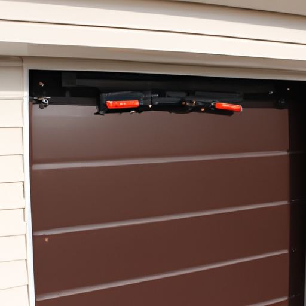

Importance of well-functioning spring coils for proper operation of the garage door
When it comes to the importance of well-functioning spring coils for the proper operation of a garage door, visible gaps or breaks in these coils can pose significant problems. These gaps or breaks can lead to (obvious) issues with the functionality and performance of the garage door. It is crucial to address any visible gaps or breaks in the spring coils promptly!
Firstly, visible gaps or breaks in the spring coils can severely affect the balance and alignment of the garage door. Without properly functioning spring coils, the weight distribution becomes uneven, causing unnecessary strain on other components such as rollers and hinges. This imbalance can result in (unexpected) noises during operation and even premature wear and tear.
Secondly, when there are visible gaps or breaks in the spring coils, it becomes difficult to ensure smooth opening and closing of the garage door. The springs play a vital role in counterbalancing the weight of the door, making it easier to operate manually or through an automated system. However, when these springs have defects like gaps or breaks, they fail to provide adequate support (which is quite upsetting).
Moreover, visible gaps or breaks in spring coils can compromise safety measures associated with garage doors. A malfunctioning coil may cause sudden drops or unexpected movements that can endanger people nearby or damage property within its path. Therefore, addressing any noticeable issues with spring coils is essential for maintaining a safe environment for everyone using or around a garage.
In conclusion (to wrap things up), neglecting visible gaps or breaks in spring coils is not an option! Proper functioning of these components ensures balanced operation, smooth movement of your garage door, and most importantly, guarantees safety for you and those around you. Regular inspection and maintenance by professionals are recommended to identify any potential issues early on and avoid costly repairs later on down the line
Signs and symptoms indicating visible gaps or breaks in the spring coils
Visible gaps or breaks in the spring coils can be quite problematic. When these signs and symptoms appear, it (isn't) a good indication for the overall condition of the springs. The presence of visible gaps or breaks suggests that there are underlying issues with the functionality and reliability of the springs.
One obvious sign indicating visible gaps or breaks in the spring coils is when you notice an uneven distribution of weight on your mattress. This can lead to uncomfortable sleeping positions and even back pain, affecting your overall sleep quality. Another symptom (that's) hard to miss is when you feel sharp protrusions poking through the surface of your mattress, making it impossible to find a comfortable spot.
(On top of that), visible gaps or breaks in the spring coils may also cause increased noise levels while you're lying down or changing positions on your mattress. The broken springs rub against each other, creating squeaking or creaking sounds that can disrupt your peaceful slumber.
Moreover, these issues may result in a shorter lifespan for your mattress as well. If left unattended, visible gaps or breaks can worsen over time, leading to further damage and compromising the overall durability and support provided by the springs.
In conclusion, when signs and symptoms indicating visible gaps or breaks in the spring coils emerge (!), it's crucial to address them promptly for optimal comfort and longevity. Ignoring these issues can negatively impact your sleep quality and potentially lead to more severe problems down the line (!).
Potential causes of visible gaps or breaks, such as wear and tear or improper maintenance
Visible gaps or breaks in the spring coils can occur due to various factors. One potential cause could be wear and tear resulting from (excessive) usage over time. When springs are subjected to constant pressure, they may eventually weaken and develop gaps or breaks. Furthermore, improper maintenance practices (such as neglecting regular cleaning or lubrication) can also contribute to the deterioration of spring coils.
Another possible factor leading to visible gaps or breaks is (inadequate) manufacturing techniques. If the springs are not properly constructed or assembled during production, they may have weak points that are prone to breaking under pressure. Additionally, using low-quality materials for manufacturing purposes could also increase the likelihood of gaps or breaks occurring in the spring coils.
Furthermore, external factors such as (unforeseen) accidents or impacts can also cause visible gaps or breaks in the spring coils. For instance, if heavy objects accidentally fall onto a mattress with coil springs, it could result in damage to the coils and create noticeable gaps. Similarly, if a significant force is applied to the springs during transportation or installation, it could lead to breakage.
In conclusion,(to sum up), there are several potential causes for visible gaps or breaks in spring coils including wear and tear due to excessive usage, improper maintenance practices, inadequate manufacturing techniques, and unforeseen accidents or impacts. It is crucial for individuals to ensure proper care and maintenance of their mattress or furniture containing spring coils to minimize the risk of experiencing these issues. By adopting appropriate cleaning routines and seeking professional assistance when necessary, one can extend the lifespan of their spring coil products and avoid unnecessary expenses caused by repairs or replacements.
(Well), maintaining our belongings properly will help us save money while ensuring comfort! So let's make sure we take good care of our mattresses and furniture with spring coils!
Safety risks associated with damaged spring coils and the need for immediate replacement
When it comes to the safety risks associated with damaged spring coils and the urgent need for immediate replacement, visible gaps or breaks in these coils are a significant concern. (Oh boy), let me tell you why! These gaps or breaks can cause serious accidents and injuries if not addressed promptly. Therefore, it is crucial to pay attention to any signs of damage and take action right away.
Firstly, when there are visible gaps or breaks in the spring coils, the overall stability of the object (y'all) is compromised. This means that whatever is being supported by these coils may become unstable and unsafe for use. For example, imagine sitting on a chair with damaged spring coils; one wrong move could result in an unexpected fall or even worse - landing on your behind!
In addition to stability issues, damaged spring coils can also create discomfort and pain for individuals using objects such as mattresses or sofas. The presence of gaps or breaks can lead to uneven weight distribution, causing pressure points on the body. Sleeping or sitting on such surfaces can quickly turn into a nightmare (no kidding). Nobody wants their beauty sleep disrupted by uncomfortable coil springs poking them in all the wrong places!
Moreover, (to make matters worse), broken spring coils may puncture through cushions or fabric coverings, posing an additional risk of injury. Imagine unsuspectingly leaning back against a sofa only to find yourself pricked by a sharp metal coil! Ouch! Such incidents are not only painful but also potentially dangerous if they occur near sensitive areas like the eyes or throat.
To ensure safety and prevent any mishaps caused by damaged spring coils, immediate replacement is necessary. By addressing this issue without delay, we can avoid potential accidents altogether (believe you me). So next time you notice any visible gaps or breaks in your trusty old mattress or couch – don't put it off! Get those springs replaced pronto!
In conclusion,(all things considered), visible gaps or breaks in spring coils present significant safety risks that cannot be ignored. Their impact ranges from stability issues to discomfort, pain, and the possibility of injury. To keep ourselves and others safe, immediate replacement is crucial when these signs of damage are observed. So let's not procrastinate on this matter – it's time for some new springs!
Steps to replace the garage door spring coils, including necessary tools and precautions
Replacing the garage door spring coils can be a daunting task! However, with the right tools and precautions in place, it is definitely achievable. When dealing with visible gaps or breaks in the spring coils, it becomes crucial to address this issue promptly (without hesitating) to ensure the safety of your garage door.
Firstly, let's discuss the necessary tools required for replacing the spring coils. You will need a pair of sturdy gloves (which you probably won't find easily), safety goggles (to protect your eyes from flying debris), and a set of wrenches to loosen and tighten the nuts on the springs. Additionally, don't forget to have a ladder handy (in case you are scared of heights) as you may need to access the overhead components of your garage door.
Now that we have covered the tools needed, let's move on to some precautions you should take before attempting this task. Firstly, always disconnect the power source (because shocking yourself is never fun) to avoid any accidents while working on your garage door. Secondly, make sure that you release tension from both sides of the broken spring coils simultaneously (or else chaos might ensue). This will prevent any sudden movements or uncontrolled releases when removing or installing new springs.
Finally, when replacing the damaged spring coils with new ones, remember to secure them tightly using appropriate nuts and bolts. This will ensure that they remain in place during regular operation and prevent any further issues down the line.
To summarize our discussion about replacing garage door spring coils with visible gaps or breaks, it is crucial to approach this task cautiously (!). By following these steps and taking necessary precautions (+), you'll be able to successfully replace those troublesome springs in no time.
In conclusion (-), if you notice any visible gaps or breaks in your garage door spring coils (-), do not ignore them (-)! Addressing this issue promptly (+) by following proper steps and using necessary tools (+) will help maintain the functionality and safety of your garage door (+). So, roll up your sleeves and get ready to tackle this project (-), because a well-functioning garage door is just a few steps away!
Recommended professional assistance for complex or high-tension spring coil replacements
When it comes to visible gaps or breaks in the spring coils, seeking recommended professional assistance is crucial. (However), tackling complex or high-tension spring coil replacements on your own can lead to disastrous consequences! With the intricacies involved in this task, it is advisable to avoid attempting such repairs without proper expertise.
Professional guidance ensures that (no) further damage occurs during the replacement process. The intricate nature of spring coils demands meticulous handling and precise knowledge. Without adequate experience, you may inadvertently exacerbate the problem by making small errors that compromise the structural integrity of the springs.
Moreover, seeking professional assistance guarantees that appropriate tools and equipment are used for the job. Specialized tools are required to safely remove and replace spring coils without causing harm to oneself or damaging surrounding components. A lack of access to these tools could result in a haphazard and potentially dangerous attempt at repair.
Furthermore, professionals possess extensive knowledge about different types of spring coils and their specific requirements. They can identify underlying issues that may have caused the visible gaps or breaks in the first place. Their expertise allows them to address these root causes effectively, ensuring a more long-lasting solution.
In conclusion, when faced with visible gaps or breaks in spring coils, enlisting recommended professional assistance is essential for successful replacements. Attempting complex repairs without expert knowledge can lead to further damage and potential hazards. Professionals possess the necessary skills, tools, and understanding of various types of spring coils (and) their unique needs. So don't hesitate! Contact a professional today and ensure your coil replacements are done right!

Difficulty opening or closing the garage door smoothly